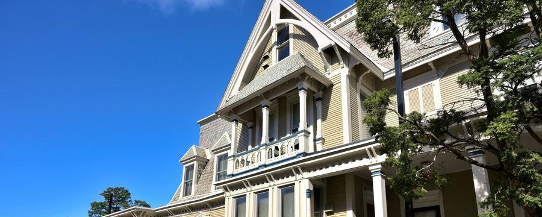
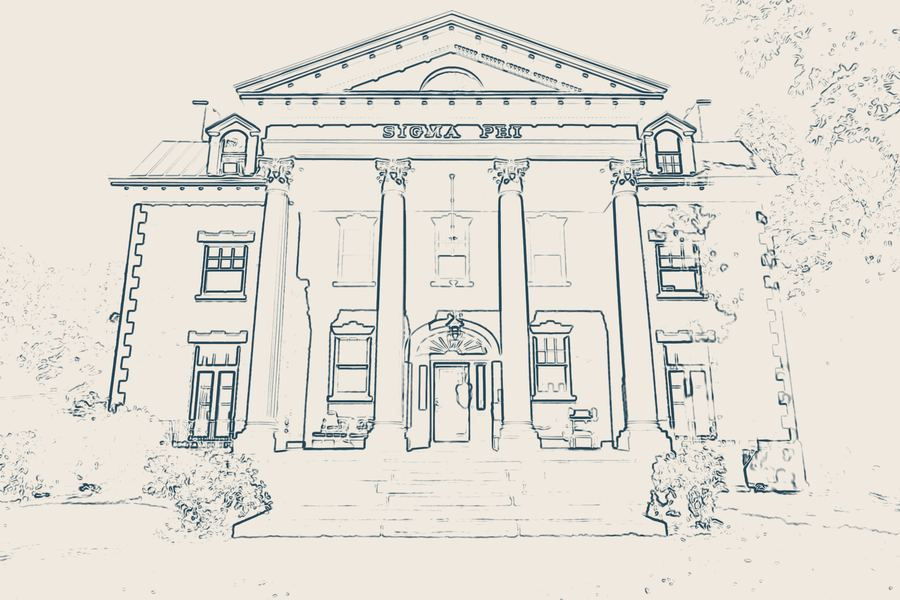
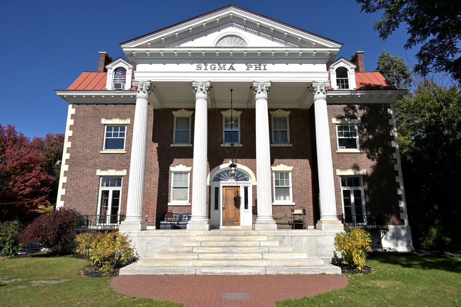
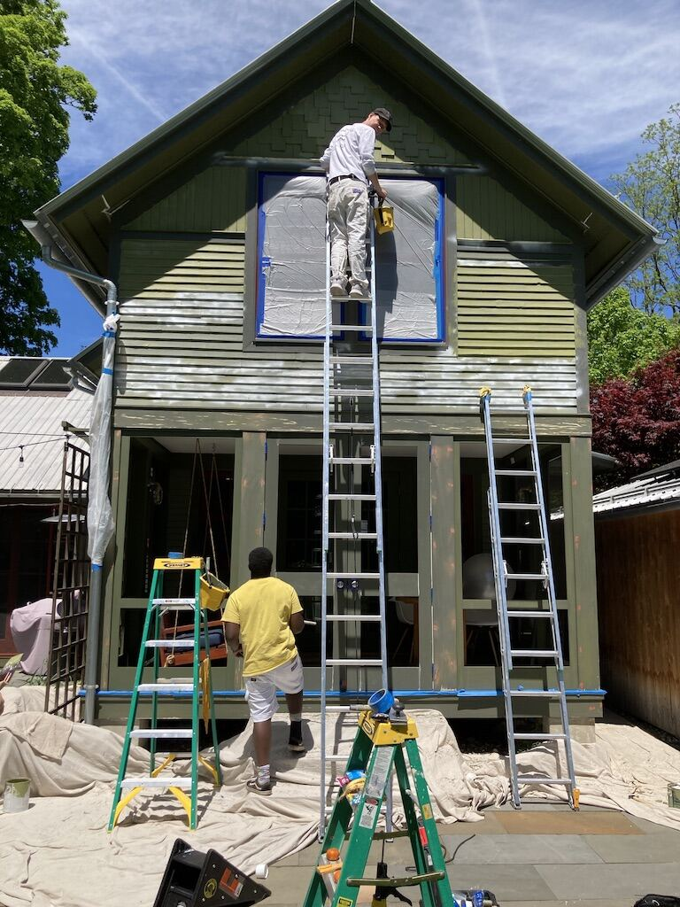
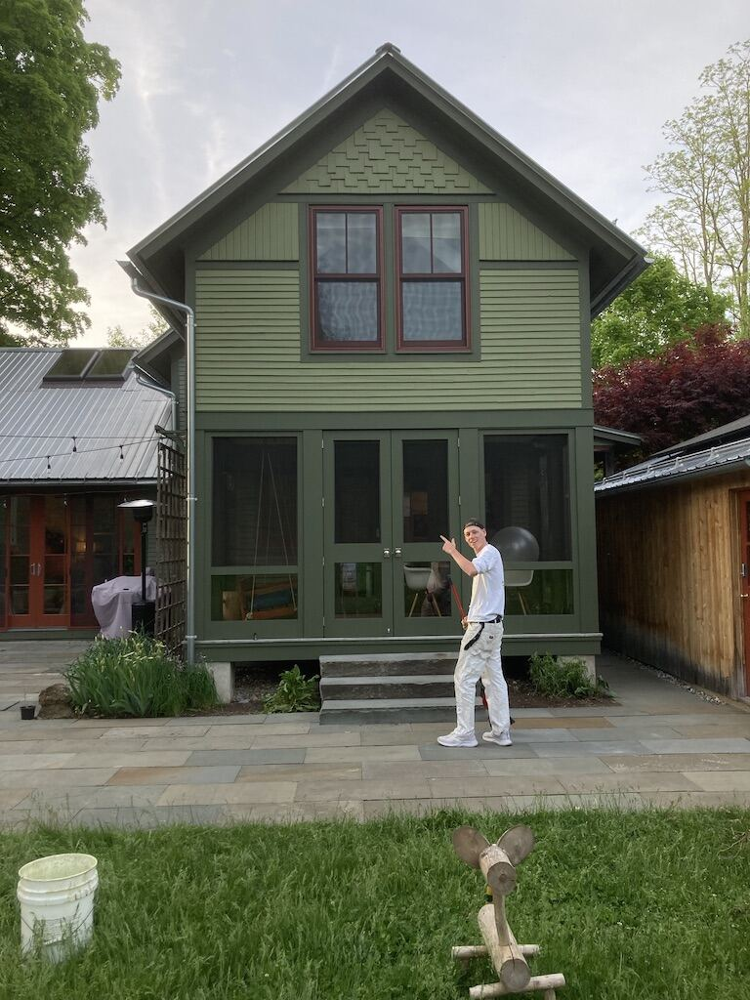
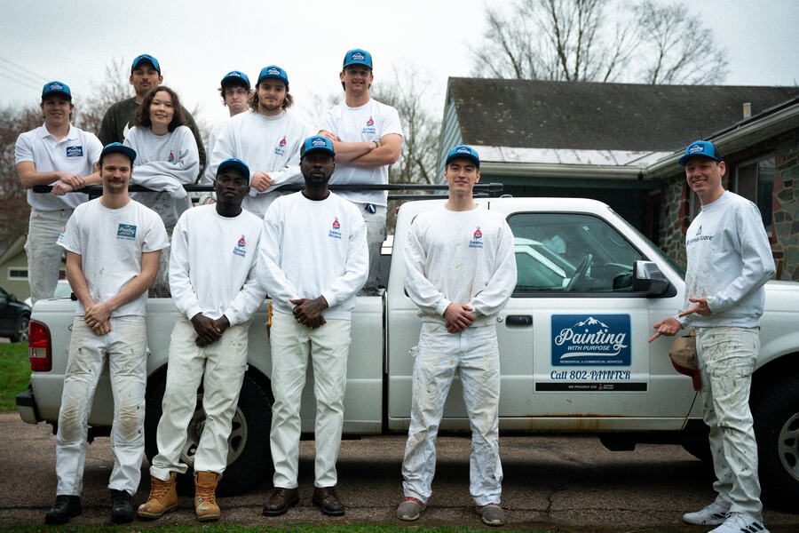

Painting With Purpose · Burlington, Vermont
Good work,
for good.
House painters for Vermont’s old homes and new ones. A share of every job goes to ending homelessness in our state.
Free estimateScroll
(01) The studio
We are a Burlington crew who scrape, prime and paint by hand, then walk every finished job with you. And part of what you pay helps a Vermont neighbor find a home.
(02) The process
Every line.Every coat.
- Prep
- Scraped, sanded, primed
- Paint
- Two finish coats
- Lead
- Certified lead-safe
- Estimate
- Free, written


Your home.Your colors.
We help you choose, sample on the wall, and then do the slow part properly, from the first scrape to the final walk-through.
Sigma Phi House · Burlington
How a job runs →

(04) Before & after
Green Victorian, Top to Bottom
The whole crew on ladders and staging for this one: scraped, primed and repainted from the peak down, with crisp trim to finish.
See all 21
(05) Purpose
Beyond
paint.
We partner with CVOEO, the Champlain Valley Office of Economic Opportunity. A share of every project goes to their housing work, built into the price and never added on top.
(06) Word of mouth
The work.
In their words.
“The BEST experience we’ve ever had with painters. They showed up on time with everything, were clean and tidy, and did the job expertly and within the time frame they estimated.”
“Professional is not a large enough word to describe PWP’s craftsmanship and commitment. Matt and Josh methodically and meticulously got it done, and the results are fantastic.”
“This house is a Victorian and had deferred maintenance. They handled lead paint abatement and scraped beautifully before painting. We are so happy to see it restored.”
“The BEST experience we’ve ever had with painters. They showed up on time with everything, were clean and tidy, and did the job expertly and within the time frame they estimated.”
“Professional is not a large enough word to describe PWP’s craftsmanship and commitment. Matt and Josh methodically and meticulously got it done, and the results are fantastic.”
“This house is a Victorian and had deferred maintenance. They handled lead paint abatement and scraped beautifully before painting. We are so happy to see it restored.”
“This house is a Victorian and had deferred maintenance. They handled lead paint abatement and scraped beautifully before painting. We are so happy to see it restored.”
“Our 16 year old kitchen cabinets were very worn and look like new again! Professional, clean, efficient, on time and reasonable in price.”
“They fixed a crack from a previous painting company and painted shelves and baseboards with precision. Their mission of giving back is truly amazing.”
“This house is a Victorian and had deferred maintenance. They handled lead paint abatement and scraped beautifully before painting. We are so happy to see it restored.”
“Our 16 year old kitchen cabinets were very worn and look like new again! Professional, clean, efficient, on time and reasonable in price.”
“They fixed a crack from a previous painting company and painted shelves and baseboards with precision. Their mission of giving back is truly amazing.”
“They fixed a crack from a previous painting company and painted shelves and baseboards with precision. Their mission of giving back is truly amazing.”
“The BEST experience we’ve ever had with painters. They showed up on time with everything, were clean and tidy, and did the job expertly and within the time frame they estimated.”
“Our 16 year old kitchen cabinets were very worn and look like new again! Professional, clean, efficient, on time and reasonable in price.”
“They fixed a crack from a previous painting company and painted shelves and baseboards with precision. Their mission of giving back is truly amazing.”
“The BEST experience we’ve ever had with painters. They showed up on time with everything, were clean and tidy, and did the job expertly and within the time frame they estimated.”
“Our 16 year old kitchen cabinets were very worn and look like new again! Professional, clean, efficient, on time and reasonable in price.”